Live preview
Two animated SVGs you can drop straight into the marketing page. The terminal asset shows what Claude Code looks like before Claudius. The app asset shows what it looks like after.

Blinks at ~1 Hz and glides with the typed command, like a real REPL.
Pixel-art Claudius bobs gently. Eyes blink every few seconds.
Soft glow pulse on the "Feature of the week" highlight.
Then with Claudius
Workspace switcher, tabs, chat, tool calls, activity, cost — all the things a terminal can't show you at once.

Orange dot pulses on the live session — the one Claude is currently driving.
Typing dots, then a wipe reveal that mimics the SSE stream — tools land mid-paragraph.
Tool checkmarks fade in sequentially. Context bar breathes around 8%.
Blinking cursor in the input. Idle dot in the session header softens on a 2.4s cycle.
Under the hood
The model at the core, memory and sessions feeding in, agents and MCP servers firing out — data packets flowing through every conduit.

Hexagonal model core — neural nodes fire in sequence, the core pulses, rings radiate out.
Data packets stream along every pipe — blue in, green and orange out — over a flowing dashed current.
SQLite banks whose fill bars breathe; sessions blink live / awaiting / idle.
Agents spawn in a pulsing cluster, MCP ports reconnect, the scheduler sweeps its clock.
Turn the page
It opens on the Claude Code terminal. After a beat the page turns over to Claudius — catch the system internals on its back as it flips.
The page turns in 5 s · click to flip it back
Before / after
Drop them in adjacent sections of the marketing page — terminal first, Claudius second — and let the difference speak for itself.